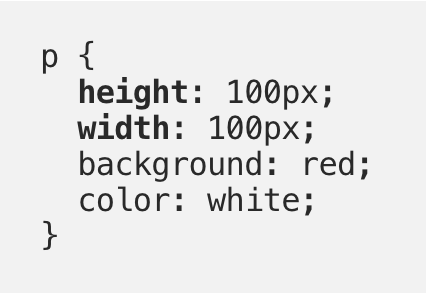
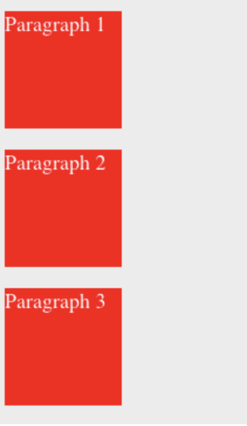
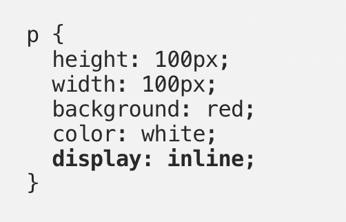
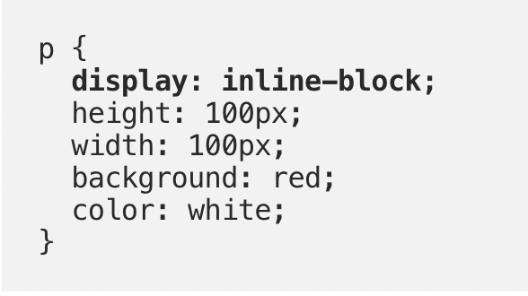
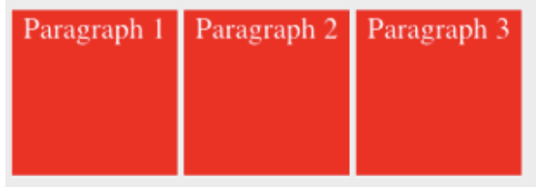

Sprint 2 - Tech Blog
Display: Block, Inline, and Inline-Block in CSS - What are the Differences?
A web page treats every HTML element as a box, allowing you to quickly create a straightforward structure with common elements such as a header, main section, and a footer. In CSS the display property then allows you to determine how these boxes will be shown. Every HTMl element has a default display value. This is why a <div> or a <p> tag takes the full width of available space and each starts on a new line; and why other HTML tags like <span> or <img> display side-by-side. Another way of looking at this is that a <div> or <p> tag is a block-level element and a <span> or <img> is an inline element.
Block and Inline elements have different key characteristics.
Block-level elements:
- Take the full width of the viewport by default
- Each element is displayed in a new line
- Width and height properties can be set
- Block-level elements can contain other elements
For example, as <p> tags are block-level elements, width and height properties can be set:

Even with a width of 100px, unlikely to be the full width of the viewer, the next <p> element will still start with a new line:

Inline elements:
- These elements take up only as much space as they need
- Are displayed side-by-side
- Do not accept width or height properties
- Can be a parent element of other inline elements
We can modify the behaviour of block elements to display inline instead of stacked:

Seeing as the <p> tag now has an inline element it is modified to place <p> elements side-by-side. Width and height properties have no effect any longer.
Display: Inline-block:
- Combines the characteristics of both inline and block-level elements
- Elements can be placed inline in your layout
- Elements can display width and height properties
Display: inline-block is an inline element with width and height properties or we can think of it like a block-level element that doesn’t have to start on a new line.

These <p> items can now be placed side-by-side and width and height properties can also be set. This allows us a lot more flexibility with our layout design and provides options for the visual appearance of our web page.
